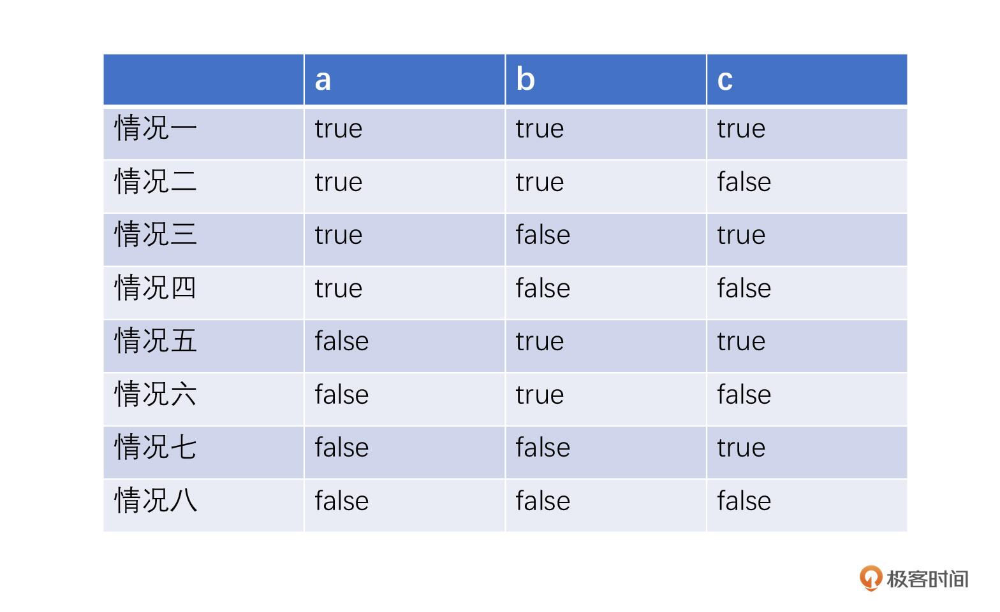
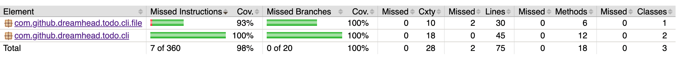
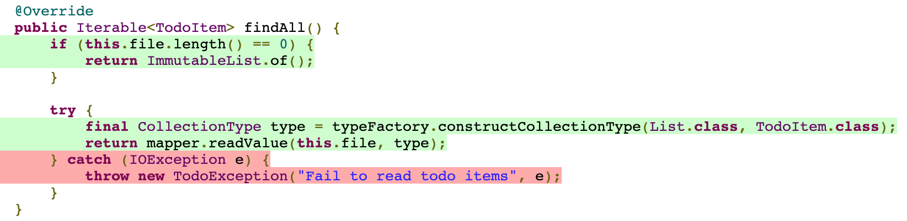

- 00 开篇词 为什么写测试是程序员的本职工作？.md
- 01 实战：实现一个 ToDo 的应用（上）.md
- 02 实战：实现一个 ToDo 的应用（下）.md
- 03 程序员的测试与测试人员的测试有什么不同？.md
- 04 自动化测试：为什么程序员做测试其实是有优势的？.md
- 05 一个好的自动化测试长什么样？.md
- 06 测试不好做，为什么会和设计有关系？.md
- 07 Mock 框架：怎么让测试变得可控？.md
- 08 单元测试应该怎么写？.md
- 09 测试覆盖率：如何找出没有测试到的代码？.md
- 10 为什么 100% 的测试覆盖率是可以做到的？.md
- 11 集成测试：单元测试可以解决所有问题吗？.md
- 12 实战：将 ToDo 应用扩展为一个 REST 服务.md
- 13 在 Spring 项目中如何进行单元测试？.md
- 14 在 Spring 项目如何进行集成测试？.md
- 15 测试应该怎么配比？.md
- 16 怎么在遗留系统上写测试？.md
- 17 TDD 就是先写测试后写代码吗？.md
- 18 BDD 是什么东西？.md
- 答疑解惑 那些东西怎么测？.md
- 结束语 对代码的信心要从测试里来.md
09 测试覆盖率：如何找出没有测试到的代码？
你好，我是郑晔！
经过前面内容的介绍，相信你现在已经知道如何去编写单元测试了。上一讲，我们说编写单元测试应该面向接口行为来编写，不过这样一来，就存在一种可能：我预期的行为都对了，但是因为我在实现里写了一些预期行为之外的东西（比如有一些分支判断），在代码实际执行的时候，可能就会出现预期之外的行为。
如何尽可能消除预期之外的行为，让代码尽在掌控之中呢？这一讲，我们就来讲讲如何查缺补漏，找到那些测试没有覆盖到的代码。我们要来讨论一下测试覆盖率。
测试覆盖率
测试覆盖率是一种度量指标，指的是在运行一个测试集合时，代码被执行的比例。它的一个主要作用就是告诉我们有多少代码测试到了。其实更严格地说，测试覆盖率应该叫代码覆盖率，只不过大多数情况它都是被用在测试的场景下，所以在很多人的讨论中，并不进行严格的区分。
既然测试覆盖率是度量指标，我们就需要知道有哪些具体的指标，常见的测试覆盖率指标有下面这几种：
- 函数覆盖率（Function coverage）：代码中定义的函数有多少得到了调用；
- 语句覆盖率（Statement coverage）：代码中有多少语句得到了执行；
- 分支覆盖率（Branches coverage）：控制结构中的分支有多少得到了执行（比如 if 语句中的条件）；
- 条件覆盖率（Condition coverage）：每个布尔表达式的子表达式是否都检查过 true 和 false 的不同情况；
- 行覆盖率（Line coverage）：代码中有多少行得到了测试。
以函数覆盖率为例，如果我们在代码中定义了 100 个函数，运行测试之后只执行 80 个，那它的函数覆盖率就是 80⁄100=0.8，也就是 80%。
这几个指标基本上看一眼就知道是怎么回事，唯一稍微复杂一点就是条件覆盖率，因为它要测试的是在一个布尔表达式中每个子表达式所有真假值的情况，我们来看看下面这个代码。
if ((a || b) && c) {
...
}
就是这么一个看上去很简单的情况，因为它牵扯到 a、b、c 三个子表达式，又要把每个子表达式的真假值都要测试到，所以，就需要有 8 种情况。

在这么一个条件比较简单的情况下，其实条件覆盖率已经是很复杂了。如果条件进一步增多，复杂度会进一步提升，想要在测试里对条件进行全覆盖也不是一件容易的事。这也给了我们一个编码上的提示：尽可能减少条件。事实上，在真实的项目中，很多条件都是不必要的复杂，可以通过提前返回将一些复杂的条件做一个拆分。
其实，测试覆盖率的指标还有一些，不过上面这些已经足够我们在日常工作中使用了。而且，具体能够使用哪个指标，还要看我们使用的工具具体支持哪些指标。
JaCoCo：一个 Java 的测试覆盖率工具
下面我就以 Jacoco 为例，讲讲如何实际地使用一个测试覆盖率工具。
JaCoCo 是 Java 社区常用的一个测试覆盖率工具，这个名字一看就是 Java Code Coverage 的缩写。开发它的团队原本是开发一个叫 EclEmma 的 Eclipse 插件，这个插件本身就是用来做测试覆盖率的。只不过，后来团队发现开源社区虽然有不少测试覆盖率的实现，但大多绑定在特定工具上，于是，他们决定启动 JaCoCo 这个项目，把它当做一个不绑定在特定工具上的独立实现，让它成为 JVM 环境中的标准技术。
我们已经知道了测试覆盖率有好多不同的指标，学习一个具体的测试覆盖率工具，主要就是把指标做一个对应，知道如何设置相应的指标。
在 JaCoCo 里，指标对应的概念是 counter。我们要在覆盖率中使用哪些指标，也就是要指定哪些不同的 counter。
每个 counter 提供了不同的配置，比如覆盖的数量（COVEREDCOUNT），没有覆盖的数量（MISSEDCOUNT）等等，但我们最关心的只有一件事：覆盖率（COVEREDRATIO）。
有了 counter，选定了配置，接下来，要确定的就是取值的范围，也就是最大值（maximum）和最小值（minimum）是多少。比如，我们这里关注的就是覆盖率的值应该是多少，一般就是配置它的最小值（minimum）是多少。
覆盖率是一个比例，所以，它的取值范围就是从 0 到 1。我们可以根据自己项目的需要来进行配置。根据上面的介绍，如果我们要求行覆盖率达到 80%，我们就可以这样配置。
counter: "LINE", value: "COVEREDRATIO", minimum: "0.8"
好，你现在已经有了对于 JaCoCo 的基本了解。但通常在项目中，我们很少会直接使用它，而是会把它与我们项目的自动化过程结合起来。
在项目中使用测试覆盖率
其实，我们在前面的实战中每次执行提交之前的检查命令时，都会运行到 JaCoCo。只不过在大多数情况下，只要测试写得好，这项检查很容易就通过了。不过，在第二讲当我们处理到 Jackson 时，我们被测试覆盖率挡住了，当时是发现了异常处理的问题。
这就是自动化检查的价值。一般情况下，只要你工作做得好，它就默默地在下面工作，并不会影响到你，而一旦你因为一些疏忽忘记了一些事情，它就会跳出来提醒你。
无论是 Ant，还是 Maven，抑或是 Gradle，Java 社区主流的自动化工具都提供了对于 JaCoCo 的支持，我们可以根据自己选用的工具进行配置。大部分情况下，配置一次，全团队的人就都可以使用了。
这里面的关键点在于，把测试覆盖率与提交过程联系起来。我们在实战中，提交之前要运行检查过程，测试覆盖率检查就在这个过程里。这样，就保证了它不是一个独立的存在，不仅在我们开发过程中起作用，更进一步，在持续集成的过程中也能够起到作用。
在日常开发中，真正与我们经常打交道的是测试覆盖率不通过的时候，比如，在我们的实战中，运行脚本对代码进行检查时，如果测试覆盖率不够，我们就会得到下面这样的提示。
Rule violated for package com.github.dreamhead.todo.cli.file: lines covered ratio is 0.9, but expected minimum is 1.0
这里会有哪些报错，取决于我们配置了多少个 counter。按照我通常的习惯，我会把所有的 counter 都配置上去，这样就可以发现更多的问题了。
不过，这个提示只是告诉我们测试覆盖率不够，但具体哪不够，我们还需要查看测试覆盖率的报告。一般来说，测试覆盖率的报告是我们在与工具集成的时候配置好的。JaCoCo 可以提供好多种报告类型：XML、CSV、HTML 等等。按照一般使用习惯来说，我会优选使用 HTML 的报告，这样就可以直接用浏览器打开看了。如果你有工具需要其它格式的报告，也可以配置不同的格式。
生成报告的位置也是可以配置的，我在实战项目中，把它配置在 \(buildDir/reports/jacoco 这个目录下，这里的 \)buildDir 指的是每个模块构建生成物的目录，一般来说，就是 build 目录。所以，每次当我看到因为测试覆盖率造成构建失败，就要就可以打开这个目录下的 index.html 文件，它会给你所有这个模块测试覆盖情况的总览。

在实战项目中，我们配置的覆盖率要求是 100%，所以，我们很容易就发现没有覆盖到的地方在哪里，就是那个有红色的地方。然后我们可以一路追踪进去，找到具体类，再找到具体的方法，最终定位到具体的语句，下面就是我们在实战中定位到的问题。

找到了具体的测试覆盖不足的地方，接下来，就是想办法提高测试率。一般来说，在简单的情况里通过增加或调整几个测试，就可以把这些场景覆盖到。但也有一些不是那么容易覆盖的，比如在实战中，我们看到 Jackson API 中抛出的 IOException。
不过，具体如何解决这个问题，对不同的同学来说，会有各自的解决方案。这个地方真正容易引起争议的地方是为什么测试覆盖率要设置成 100%。
在真实的项目中，很多不愿意写测试的人巴不得这个数字越低越好，但实际上我们也很清楚，这个数字设置得很低就没有任何意义了。
先不说一个既有的项目应该设成多少，如果是一个全新的项目，测试覆盖率应该设成多少呢？我在这里已经给出了我的答案是：100%。这不是我为了这个实战故意设置的值，而是我在真实的项目中就是这样要求的。估计有人看到这个数字已经有一种快要疯了的感觉，在真实的项目中，设置成 100%怎么可能达到吗？
预告一下，这就是下一讲的主题，我们来讨论为什么100%的测试覆盖率是可能的。
总结时刻
这一讲我们讲了测试覆盖率。测试覆盖率是帮我们发现在测试中没有覆盖到的代码，也就是帮助我们在测试之外查缺补漏。
测试覆盖率实际上是一组不同指标的组合，所谓覆盖率就是运行一组测试，执行到的元素和总的元素比例。大部分指标都比较好理解，只是条件覆盖率要求比较高，与其通过测试覆盖那么多的条件，不如把代码本身写简单，降低测试的难度。
我以 JaCoCo 为例，给你介绍了一个测试覆盖率工具，其中的 counter 对应着测试覆盖率的指标。在实际的项目中使用测试覆盖率工具，关键是要把它与自动化的过程结合起来，让它不是独立的存在。每次提交，每次 CI 过程都要进行测试覆盖率的检查。
最后我们还讲到了如何通过测试覆盖率的报告找到未覆盖的代码，定位到问题之后，补齐测试对于大多数程序员来说还是相对容易的。
如果今天的内容你只能记住一件事，那请记住：将测试覆盖率的检查加入到自动化过程之中。
思考题
今天我们讲到了测试覆盖率，你的项目中用到了测试覆盖率吗？你对于测试覆盖率是怎样要求的呢？欢迎在留言区分享你的经验。
© 2019 - 2023 Liangliang Lee. Powered by gin and hexo-theme-book.